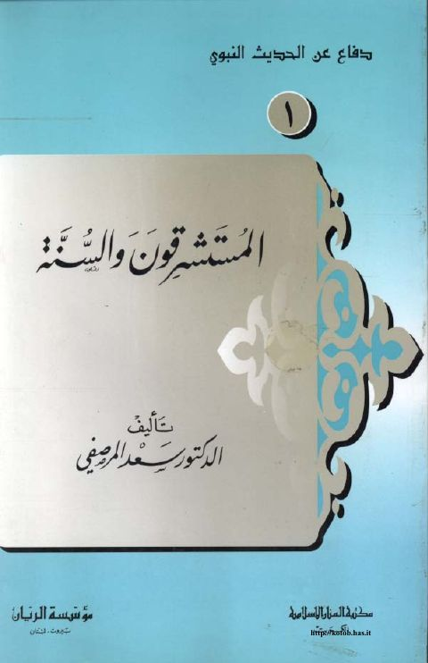
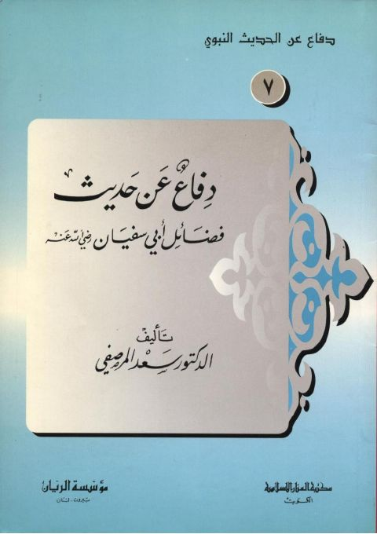
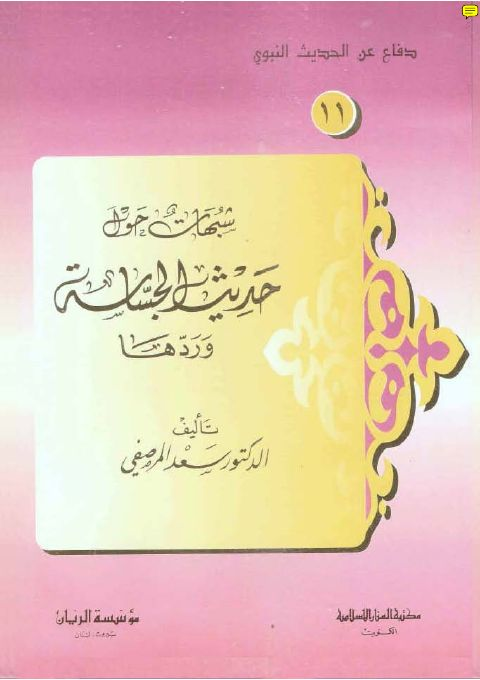
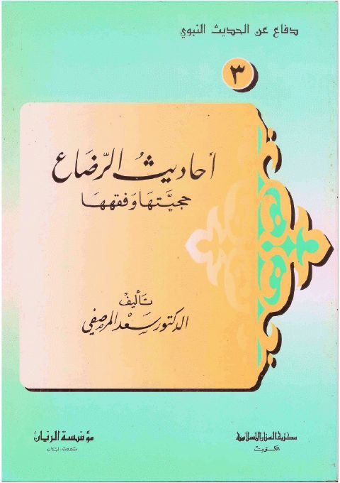
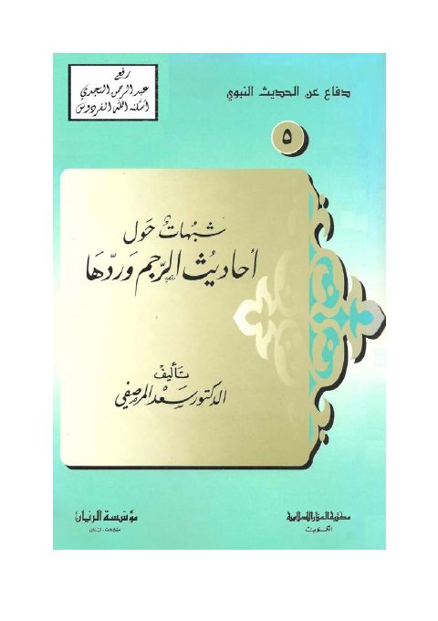

سعد المرصفي
Author
Resources

المستشرقون والسنة المستشرقون والسنة سعد المرصفي
دفاع عن حديث فضائل أبي سفيان رضي الله عنه دفاع عن حديث فضائل أبي سفيان رضي الله عنه سعد المرصفي
شبهات حول حديث الجساسة وردها شبهات حول حديث الجساسة وردها سعد المرصفي المستشرقون والسنة
المستشرقون والسنة
سعد المرصفي
المستشرقون والسنة
المستشرقون والسنة
سعد المرصفي

أحاديث الرضاع حجيتها وفقهها أحاديث الرضاع حجيتها وفقهها سعد المرصفي
شبهات حول أحاديث الرجم وردها- سعد المرصفي شبهات حول أحاديث الرجم وردها- سعد المرصفي سعد المرصفي